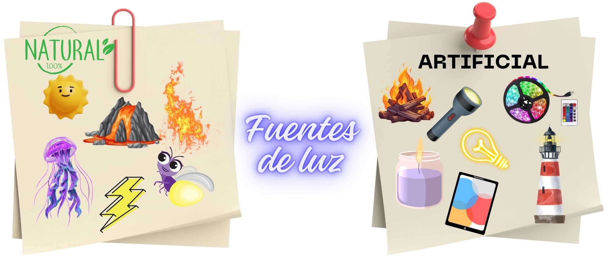

¿Qué es la luz?
La LUZ es una forma de energía que se mueve en LÍNEA RECTA y en TODAS LAS DIRECCIONES. También se refleja en los objetos y esa luz reflejada entra en nuestro ojo y nos permite ver.
La luz se produce en las FUENTES DE LUZ se pueden dividir en naturales o artificiales. La fuente de luz natural más importante es el sol, que nos permite ver durante el día. Las estrellas, la lava de los volcanes también producen luz propia. Algunos animales como las luciérnagas o medusas también producen su propia luz.
Por otro lado están las fuentes de luz artificiales, que son las que han creado los humanos. Las bombillas nos ayudan a ver en la oscuridad.

Como sabemos la luz se propaga en línea recta y en forma de onda desde su fuente de luz. Seguirá así hasta que se golpee con algo, y la luz se refleje.La luz puede atravesar algunos objetos y otros no. Esto depende de si son trasparentes, traslúcidos u opacos.
Algunos objetos reflejan muy bien la luz como espejos y papeles blancos, el agua...